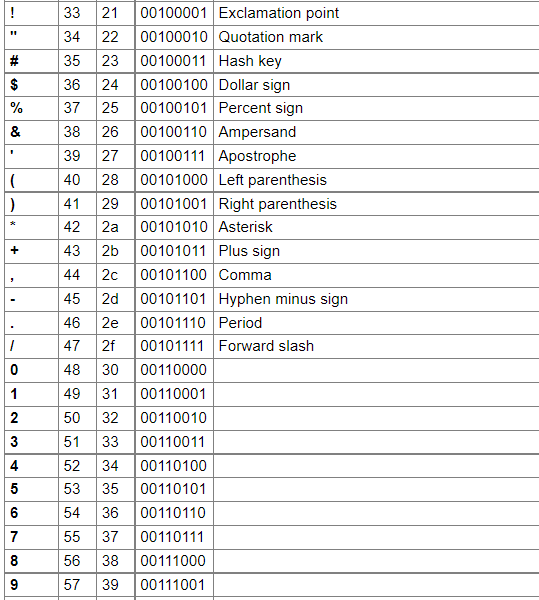

Programowanie to proces tworzenia programu komputerowego, który ma realizować określone zadania. Dzieli się go na 2 etapy:
Algorytm to jednoznaczny przepis, opisujący krok po kroku sposób postępowania w celu rozwiązania pewnego problemu lub sposobu osiągnięcia jakiegoś celu. Ilość kroków algorytmu zależy od tego, jak złożony jest problem, którego on dotyczy. Zawsze jednak liczba tych kroków będzie liczbą skończoną.
Specyfikacja problemu jest to dokładny opis problemu, który chcemy rozwiązać.
Składa się ona z:
Algorytmem liniowym nazywamy taki algorytm, który ma postać listy kroków wykonywanych zgodnie z ich kolejnością. Algorytmy liniowe są zapisem obliczeń, które mają postać ciągu operacji rachunkowych wykonywanych bez sprawdzania jakichkolwiek warunków.
Ten typ algorytmu musi mieć bloki decyzyjne czyli bloki sprawdzania warunków.
Algorytmy, które wykonują działania matematyczne na danych liczbowych, nazywamy algorytmami numerycznymi.
Dzielimy problem na kilka mniejszych, a te znowu dzielimy, aż ich rozwiązania staną się oczywiste.
Iteracja to zapętlenie algorytmu, czyli wykonywania danych działań, dopóki warunek iteracji nie zostanie spełniony.
Rekurencje wykorzystuje się do rozwiązywania problemów gdzie powtarza się czynność aby do niego dojść. Swoim działaniem przypomina iteracje. Jednak w tym przypadku funkcja sama siebie wywołuje, dopóki nie otrzyma rozwiązania
Złożoność algorytmu - ilość zasobów potrzebnych do poprawnego działania danego algorytmu
Złożoności obliczeniowa - Algorytm wykonujący najmniejszą ilość operacji podstawowych w celu rozwiązania problemu.
Złożoność czasowa - Określa ilość operacji podstawowych potrzebnych do wykonania algorytmu o danej wielkości wejściowej.
Złożoność pamięciowa - Określa ilość przestrzeni pamięci wirtualnej potrzebnej do wykonania algorytmu z określonym zestawem danych wejściowych.
ASCII - siedmiobitowy system kodowania znaków, używany we współczesnych komputerach oraz sieciach komputerowych, a także innych urządzeniach wyposażonych w mikroprocesor. Przyporządkowuje liczbom z zakresu 0−127: litery alfabetu łacińskiego języka angielskiego, cyfry, znaki przestankowe i inne symbole oraz polecenia sterujące.
